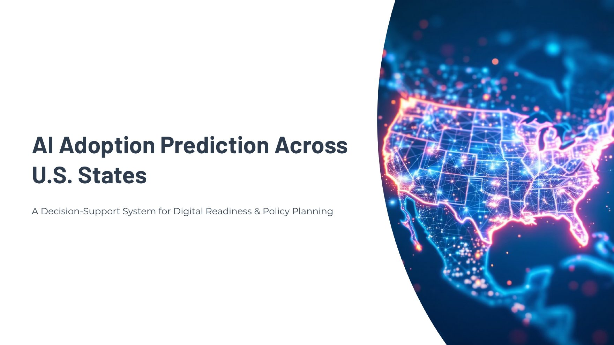

Machine learning · Decision support
AI Adoption Prediction Across U.S. States
A model that scores how ready each of the 50 U.S. states is to adopt AI, and shows which investments would move the needle most.
- Built a state-level dataset of population, income, education, broadband and small-business indicators, with simulated enrichment features for prototyping
- Engineered features and compared Logistic Regression, Random Forest and XGBoost, then selected XGBoost with SHAP explanations
- Ran what-if scenarios: raising broadband access by 5% in every state, then ranking where predicted readiness rises most
- Designed deployment (FastAPI on Cloud Run), drift and latency monitoring, and governance: model card, RACI and risk matrix
PM lens: delivered over three Agile sprints with a backlog, sprint timeline, and risk register.